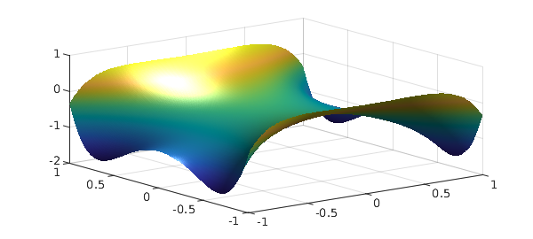

In the example examples/quad/TjTkDisk.html, we illustrated formulas due to R. M. Slevinsky for the integral over the unit disk of a project of Chebyshev polynomials $T_j(x) T_k(y)$. The fascinating property of such integrals is that they are always equal to zero except when $j$ and $k$ and both even and differ by $0$ or $\pm 2$.
We also commented at the end of that example that these formulas could be used as the basis of a Chebfun2 command sumdisk, which would elegantly compute the double integral of a chebfun2, not over its square (or rectangle) of definition but over the inscribed disk (or elliptical region). Subsequently, such a code has been written by the first author. Here we show it off.
For a trivial example, suppose our chebfun2 is the constant 1. Its integral over the square is 4,
f = chebfun2(@(x,y) 1); format long sum2(f)
ans =
4
but its integral over the disk is $\pi$,
sumdisk(f)
ans = 3.141592653589793
As another example, let's consider the bivariate Gaussian $\exp(-(x^2+y^2)/2$. Here is its integral over the unit disk:
cheb.xy f = exp(-(x.^2+y.^2)/2); sumdisk(f)
ans = 2.472240777719226
Switching to polar coordinates enables us to perform the integral exactly; it is $2\pi(1 - 1/\sqrt e)$:
exact = 2*pi*(1-exp(-.5))
exact = 2.472240777719227
We must make a comment about the significance of sumdisk. We would certainly not claim that a competitive way to integrate a function over a disk is to make a chebfun2 of it and then call sumdisk. It would be much more efficient to work on the integral over the disk directly, and indeed, examples/quad/TjTkDisk.html gives a sample code for doing just that, which we illustrate again here:
fpolar = @(r,t) f(r*cos(t),r*sin(t)); fr = @(r) r*sum(chebfun(@(t) fpolar(r,t),[0,2*pi],'trig')); I = sum(chebfun(@(r) fr(r),[0 1],'vectorize'))
I = 2.472240777719226
The point of sumdisk is two-fold: it shows off some elegant mathematics, and it provides an good way to compute integrals over a disk if, for whatever reason, you are already working with chebfun2 objects on a square.
Here's another example. Suppose $f$ is a harmonic function, which for convenience we might obtain as the real part of an analytic function. Chebfun2 can do this very conveniently, like this
fcomplex = chebfun2(@(z) cos(2*cosh(z))); f = real(fcomplex); plot(f), camlight

Here we use sumdisk to compute the mean of $f$ over the unit disk:
sumdisk(f)/pi
ans = -0.416146836547142
Since $f$ is harmonic, this must be the same as the value of $f$ at the origin:
f(0,0)
ans = -0.416146836547142
Before long, another option for integration over disks will appear: Diskfun. There is already a chapter in the Chebfun Guide about Diskfun, but the code is still under development.